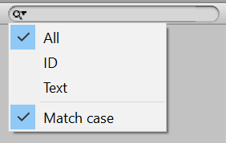

Редактор языка. Основа#
Пришло время создать ключевой элемент всего пакета — редактор языка, который будет называться "Translator". Материала так много, что создавать редактор мы будем на протяжении трех статей. В этой части мы создадим основной интерфейс редактора.
Окно#
В папке Scripts/Editor создадим класс Translator:
using UnityEngine; using UnityEditor; using UnityEngine.UIElements; namespace I18n.EditorUtilities { public class Translator : EditorWindow { Language lang; VisualElement Root => rootVisualElement; [MenuItem("Window/Translator")] public static Translator ShowWindow() { var window = GetWindow<Translator>(); window.titleContent = new GUIContent("Translator"); window.minSize = new Vector2(300, 300); window.Show(); return window; } void OnEnable() { } } }
Это обычный код окна редактора Unity. Стоит упомянуть переменную lang, которая хранит язык, который в данный момент открыт в редактора, а также свойство Root, которое является удобным сокращением переменной rootVisualElement.
Language lang; VisualElement Root => rootVisualElement;
Помимо этого, установлен минимальный размер окна редактора: 300 пикселей в высоту и ширину.
window.minSize = new Vector2(300, 300);
Выбор языка#
Сейчас переменная lang нашего окна всегда равна null, так как мы ничего в не помещаем. Пора это исправить!
Для начала создадим публичное свойство Lang прямо под переменной lang для получения и установки языка. Зачем свойство? Потому что при смене языка нам придется обновлять интерфейс редактора. И только одна из причин. О другой ниже.
public Language Lang { get => lang; set { lang = value; if (lang != null) EditorUtility.SetDirty(lang); SetupLayout(); } }
Что за SetDirty(lang)? А это еще одна причина, из-за который мы создали свойство Lang. Этим вызовом мы говорим Unity, чтобы он действительно записывал изменения в языке. Без вызова SetDirty все изменения будут потеряны после перезапуска Unity.
Теперь нам нужен метод, который открывает окно, в котором можно выбрать нужный язык. Назовем его OpenLangPicker:
void OpenLangPicker(Language langToShow = null) { EditorGUIUtility.ShowObjectPicker<Language>(langToShow, false, "", 0); }
Метод принимает необязательный аргумент langToShow. Если его указать, то в окне выбора указанный язык будет выделен по умолчанию.
Вот так будет выглядеть окно выбора языка:
{kind=link}
Но открыть окно выбора — полдела. Нам нужно отловить момент, когда пользователь выбирает в этом окне нужный язык. Сделать это можно с помощью простой проверки в методе OnGUI:
void OnGUI() { if (Event.current.commandName == "ObjectSelectorUpdated") { Lang = (Language)EditorGUIUtility.GetObjectPickerObject(); } }
Поместим оба метода выше (OnGUI и OpenLangPicker) в регион кода:
#region Language picker void OnGUI() { if (Event.current.commandName == "ObjectSelectorUpdated") { Lang = (Language)EditorGUIUtility.GetObjectPickerObject(); } } void OpenLangPicker(Language langToShow = null) { EditorGUIUtility.ShowObjectPicker<Language>(langToShow, false, "", 1); } #endregion
Таблица стилей#
Перед началом работы с интерфейсом давайте сразу подключим таблицу стилей. Она у нас одна.
Создаем в Editor Resources/uss пока что пустой файл Translator.uss.
Теперь в классе Translator заполним содержимое метода OnEnable():
void OnEnable() { #region Loading stylesheet var styleSheet = AssetDatabase.LoadAssetAtPath<StyleSheet>(Path.USS("Translator")); Root.styleSheets.Add(styleSheet); #endregion }
Основа интерфейса#
На самом деле у нашего окна два интерфейса: когда язык не указан и когда он указан.
В первом случае нужно попросить пользователя выбрать язык. Во втором — отобразить обычный интерфейс редактора языка.
Создадим ряд функций, которые решают, какой интерфейс отображать:
#region Layouts void SetupLayout() { ClearLayout(); if (Lang != null) { SetupLangLayout(); } else { SetupNoLangLayout(); } } void SetupLangLayout() { Root.AddToClassList("has-lang"); } void SetupNoLangLayout() { Root.AddToClassList("no-lang"); } void ClearLayout() { Root.Clear(); Root.RemoveFromClassList("no-lang"); Root.RemoveFromClassList("has-lang"); } #endregion
Метод SetupLayout сначала удаляет все содержимое окна (и его классы) с помощью ClearLayout(). Затем идет проверка. Если переменная lang содержит язык, то отрисовывается обычный интерфейс редактора (вызов SetupLangLayout()). Если переменная она пустая, отрисовываем интерфейс с просьбой указать язык для работы (вызов SetupNoLangLayout()).
Осталось только вызывать перерисовку интерфейса в нужных местах, а именно:
- Момент открытия окна
- Изменение переменной
lang
Для первого случая добавим SetupLayout() в конец метода OnEnable(), сразу после применения таблицы стилей:
void OnEnable() { #region Loading stylesheet var styleSheet = AssetDatabase.LoadAssetAtPath<StyleSheet>(Path.USS("Translator")); Root.styleSheets.Add(styleSheet); #endregion SetupLayout(); }
Для второго случая вызываем SetupLayout() в set публичного свойства Lang:
public Language Lang { get => lang; set { lang = value; if (lang != null) EditorUtility.SetDirty(lang); SetupLayout(); } }
Интерфейс без языка#
Разберемся с самым простым случаем, когда при открытии окна язык не указан. Это означает, что мы должны попросить пользователя выбрать его.
В методе SetupNoLangLayout создадим текстовое поле и кнопку:
void SetupNoLangLayout() { Root.AddToClassList("no-lang"); var message = new Label("Select a language to work with Translator."); var selectBtn = new Button(() => { OpenLangPicker(); }); selectBtn.text = "Select"; Root.Add(message); Root.Add(selectBtn); }
Теперь перейдите в редактор Unity. В верхнем меню выберите "Window > Translator". Вы увидете что-то типо такого:
{kind=link}
Выглядит коряво. Давайте перейдем в таблицу стилей Translator.uss и сделаем по красоте:
/* No language */ .no-lang { flex: 1; justify-content: center; align-items: center; } .no-lang Button { margin-top: 10px; width: 150px; }
Так как у корневого элемента есть класс no-lang, мы можем растянуть его на всю шириную и высоту окна flex: 1, а весь контент разместить по центру (justify-content: center и align-items: center).
Затем установили фиксированную ширину кнопки и дали ей небольшой отступ от пояснительного текста.
Снова открываем окно в Unity. Вот теперь выглядит отлично!
{kind=link}
Шапка#
Большая часть всех стандартных окон Unity имеет шапку. Несколько примеров:
- Окно "Иерархия"
{kind=link}
- Окно "Проект"
{kind=link}
- Окно "Сцена"
{kind=link}
В шапке, как правило, содержатся кнопки основных действий и строка поиска. Именно такая шапка и нужна нашему "Translator".
Разметка и стили#
В папке Editor Resources/uxml Создадим файл Translator.uxml. В нем будет разметка интерфейса редактора. Сразу загрузим разметку в методе SetupLangLayout класса Translator:
void SetupLangLayout() { Root.AddToClassList("has-lang"); #region Loading UXML var uiAsset = AssetDatabase.LoadAssetAtPath<VisualTreeAsset>(Path.UXML("Translator")); uiAsset.CloneTree(Root); #endregion }
Вернемся к Translator.uxml и создадим разметку шапки:
<UXML xmlns="UnityEngine.UIElements" xmlns:uie="UnityEditor.UIElements"> <uie:Toolbar class="header"> <VisualElement class="actions"> <uie:ToolbarButton name="lang-switcher" tooltip="Change language..." /> <uie:ToolbarButton name="add-phrase" text="Add phrase" /> </VisualElement> <uie:ToolbarPopupSearchField name="search" /> </uie:Toolbar> </UXML>
В коде выше шапка разбита на две части: левую, которая содержит две кнопки (переключение языка и добавление новой фразы) и правую — поле поиска по фразам.
Проверим, как это выглядит. Откройте окно и выберите любой язык:
{kind=link}
Очевидно, что выглядит немного убого. Исправим это! В Translator.uss, сразу под стилями интерфейса без языка начнем писать стили для нашей шапки:
/* Has language */ .header { justify-content: space-between; flex-shrink: 0; } .header .actions { flex-direction: row; flex-shrink: 0; } .header .actions ToolbarButton { margin-left: 5px; } #search { margin-left: 20px; } #search .unity-toolbar-search-field__search-button { flex-shrink: 1; } #search TextField { flex: 1; max-width: 300px; min-width: 75px; }
Сначала мы разводим две части шапки в разные стороны (justify-content: space-between;). Далее ставим кнопки левой части в строку и запрещаем им сжиматься (flex-direction: row; и flex-shrink: 0;). Затем добавляем отступы для каждой кнопки, а также большой отступ слева для поля поиска (чтобы оно вплотную не прижималось к кнопкам). Наконец, устанавливаем максимальную и минимальную ширину поля поиска.
Результат:
{kind=link}
Выглядит отлично!
Осталось только дописать логику.
Кнопки действий#
Начнем с самой левой кнопки — кнопки выбора языка. В методе SetupLangLayout, под кодом загрузки разметки пишем следующее:
#region Toolbar actions var langBtn = Root.Query<Button>("lang-switcher").First(); langBtn.text = Lang.Info.Code; langBtn.RegisterCallback<MouseUpEvent>((e) => OpenLangPicker()); #endregion
Теперь в левой кнопке отображается код текущего языка. По клику на эту кнопку открывается окно с выбором языка.
{kind=link}
Вторую кнопку ("Add phrase") пока не будем трогать. Оставим для нее место в коде:
#region Toolbar actions var langBtn = Root.Query<Button>("lang-switcher").First(); langBtn.text = Lang.Info.Code; langBtn.RegisterCallback<MouseUpEvent>((e) => OpenLangPicker()); var addBtn = Root.Query<Button>("add-phrase").First(); addBtn.RegisterCallback<MouseUpEvent>((e) => { /* Добавляем фразу в редактор */ }); #endregion
Поиск#
Перейдем к логике поисковой строки. Сам поиск реализовывать пока не будем, но зато настроим поисковые фильтры: искать по ID, по тексту фразы или по тому и другому сразу, а также учет регистра.
Для начала создадим внутри нашего класса Translator перечисление SearchFilter:
enum SearchFilter { All, ID, Text }
Теперь добавим две переменные в тело класса: sFilter и sMatchCase:
SearchFilter sFilter = SearchFilter.All; bool sMatchCase = false;
Первая содержит текущий выбранный поисковый фильтр, а вторая — учитывать регистр или нет. По умолчанию поиск производится по ID и тексту без учета регистра.
Теперь нужно дать возможность выбрать эти фильтры по нажатию на иконку лупы поисковой строки.
Создадим метод SetupSearchMenu:
void SetupSearchMenu(ToolbarPopupSearchField searchBar) { foreach (var fName in Enum.GetNames(typeof(SearchFilter))) { searchBar.menu.AppendAction( fName, (e) => { sFilter = (SearchFilter)Enum.Parse(typeof(SearchFilter), fName); /* Обновить результаты поиска */ }, (e) => { return sFilter.ToString() == fName ? DropdownMenuAction.Status.Checked : DropdownMenuAction.Status.Normal; } ); } searchBar.menu.AppendSeparator(); searchBar.menu.AppendAction( "Match case", (e) => { sMatchCase = !sMatchCase; /* Обновить результаты поиска */ }, (e) => { return sMatchCase ? DropdownMenuAction.Status.Checked : DropdownMenuAction.Status.Normal; } ); }
В первой половине метода мы циклом проходимся по все фильтрам и добавляем их в меню. Во второй половине добавляем разделитесь, а сразу после него — пункт "Учитывать регистр".
Теперь в методе SetupLangLayout создаем раздел для работы со строкой поиска:
#region Search var searchBar = Root.Query<ToolbarPopupSearchField>("search").First(); SetupSearchMenu(searchBar); searchBar.RegisterValueChangedCallback((e) => { /* Запуск поиска */ }); #endregion
Откройте окно и нажимите на иконку лупы в строке поиска. Появится выпадающее меню с настройками:

Редактор через инспектор#
С помощью публичного свойства Lang мы можем установить язык редактора. Это значит, что пора связать инспектор с редактором!
Напомню, что в инспекторе (LanguageInspector) у нас имеются следующие строчки:
openButton.RegisterCallback<MouseUpEvent>(e => { // TODO: Open Translator editor window });
Вместо комментария вызовем окно редактора и в тот же момент зададим нужный язык:
openButton.RegisterCallback<MouseUpEvent>(e => { Translator.ShowWindow().Lang = (Language)target; });
Готово! Теперь редактор можно вызвать из инспектора по нажатию всего-лишь одной кнопки!